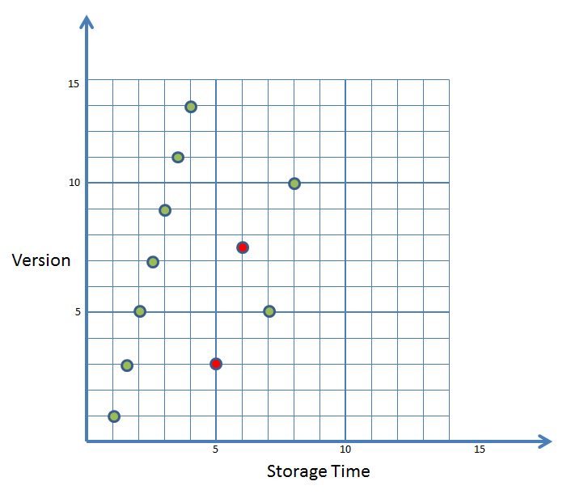
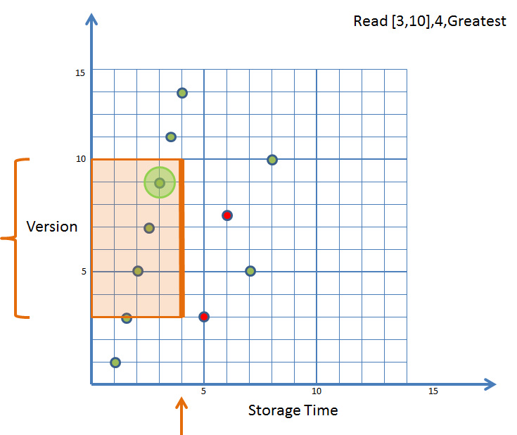
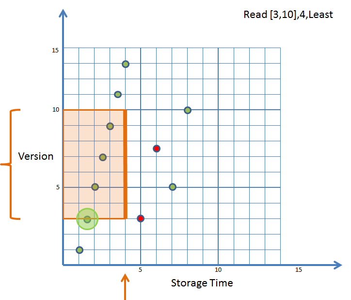
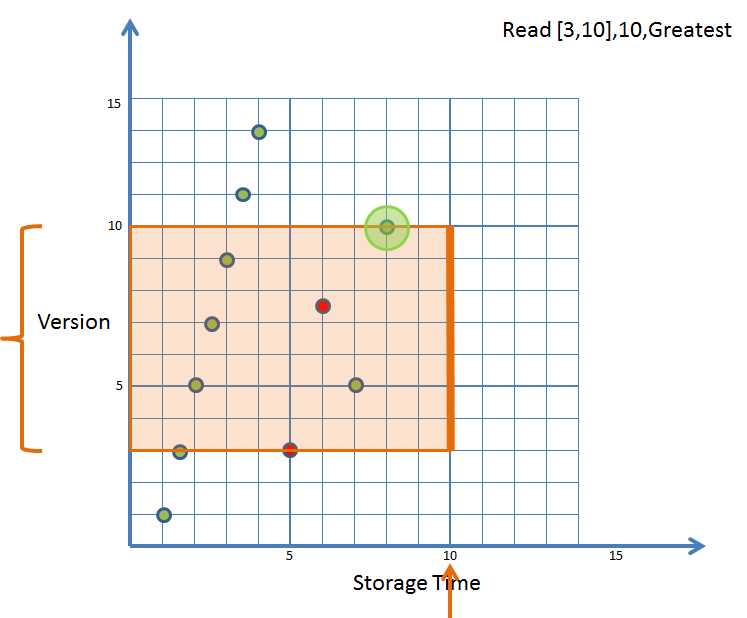
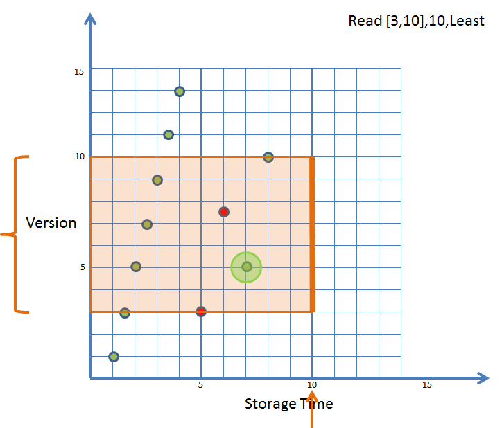
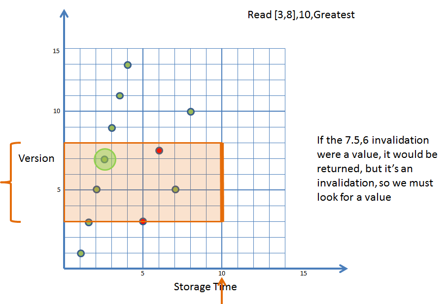

In addition to its key, each value stored in SilverKing has a version and a creation time associated with it. Versions may be supplied by users, or generated by SilverKing. Creation times are always generated by SilverKing at the time of value creation.
Each namespace in SilverKing specifies how the version and creation time are used in NamespaceOptions. For instance, some namespaces may specify that only a single value is ever associated with a key. Other namespaces may allow multiple values to be associated with a single key. In particular, each namespace specifies a NamespaceVersionMode and a RevisionMode.
NamespaceVersionMode specifies how versions for keys are supplied as follows:
A revision is the creation of a value with a version <= the latest stored version (creation time is always monotonically increasing.) RevisionMode controls whether or not a given namespace allows revisions using the value of either NO_REVISIONS or UNRESTRICTED_REVISIONS.
A SINGLE_VERSION namespace is also "write once" iff its revision mode is NO_REVISIONS; otherwise, while there is only a single version associated with any one key, different values may be associated with a key at different creation times.
Retrieval operations may specify which of the potentially several values associated with a given key are retrieved using a VersionConstraint. A VersionConstraint is specified with the following attributes:
As an example of how two-dimensional versioning works in SilverKing, consider the following example. This example considers multiple values/versions stored to a single key; it applies for any NamespaceVersionMode other than SINGLE_VERSION, and a RevisionMode of UNRESTRICTED_REVISIONS. By definition, the creation/storage time is always increasing. Value storage is shown using green circles. Value invalidation (deletion) is shown using red circles.
In this example, a client initially associates 7 monotonically increasing versions with this key. At time 5, the client invalidates version 3. At time 6, the client invalidates version 7.5. At time 7, the client revises version 5. At time 8, the client stores version 10.
The subsequent examples show how clients can use VersionConstraints to control what version is returned. The version constraint used is shown on the upper right hand corner of each example. For example, Read [3,10],4,Greatest specifies a VersionConstraint with min version of 3, max version of 10, maxCreationTime of 10, and a mode of GREATEST. In these examples, the arrow on the x-axis graphically illustrates the maxCreationTime used. The bracket on the y-axis graphically illustrates the min and max versions used. The large green circle shows the actual value returned.
|  |
|  |
|  |
|  |
|  |
|  |